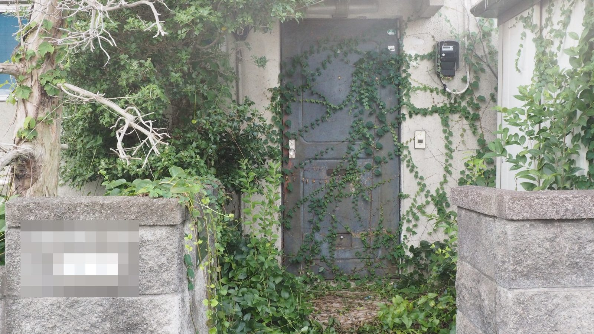
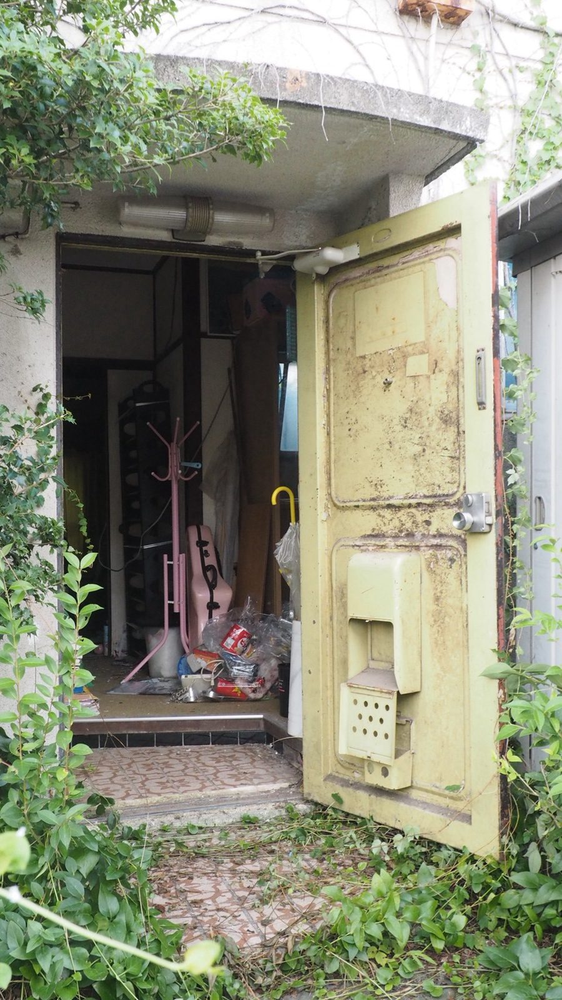
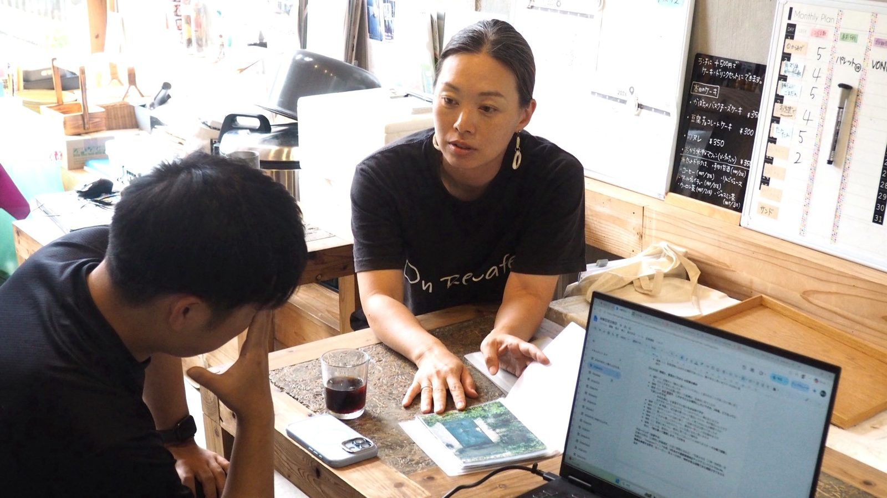
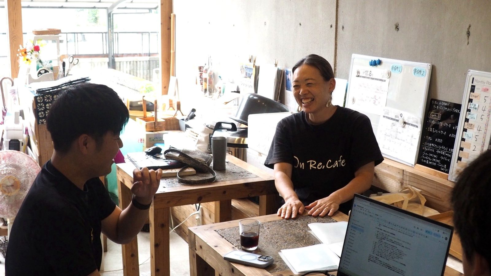
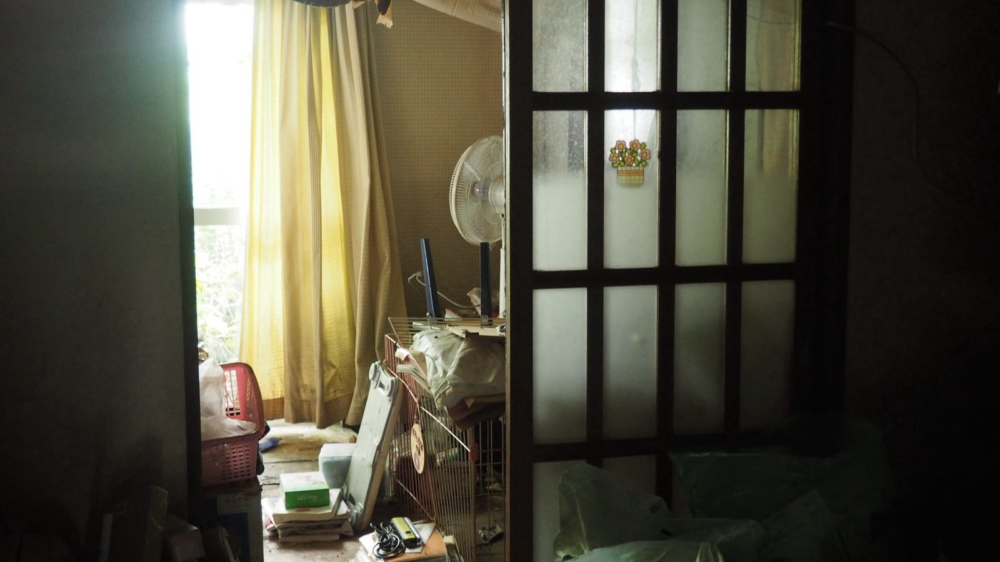

大手の予約サイトには載っていない、全国の古民家の宿とカフェを、営む人の話ごと届けるウェブメディアです。

千葉県市原市の若宮団地。築50年を超える鉄筋コンクリート2階建てのテラスハウスが横に連なる一角に、大きなガラス窓のカフェがあります。もとは相続のあと、10年間誰も住んでいなかった家です。
営んでいるのは、市原市出身の小野千景さん。大手建設会社で築年数の経った住宅団地を調べる仕事をしていた人が、いまは同じような団地の空き家を一軒ずつ直しています。カフェのほかに、シェアハウス「On Re.House」や美容サロンも同じ団地にあります。改修の設計は、市原の建築家・黒澤健一さんです。




営業日・営業時間は取材した時点（2026年8月）のものです。最新の情報はInstagramで確かめてください。
訪ねた宿と店の話を、月に1〜2回お届けします。
登録はGoogleフォームから。メールアドレスを入れるだけです。
メルマガに登録するフォームが開かない場合は kakureyado.official@gmail.com までメールでどうぞ。いつでも配信停止できます。